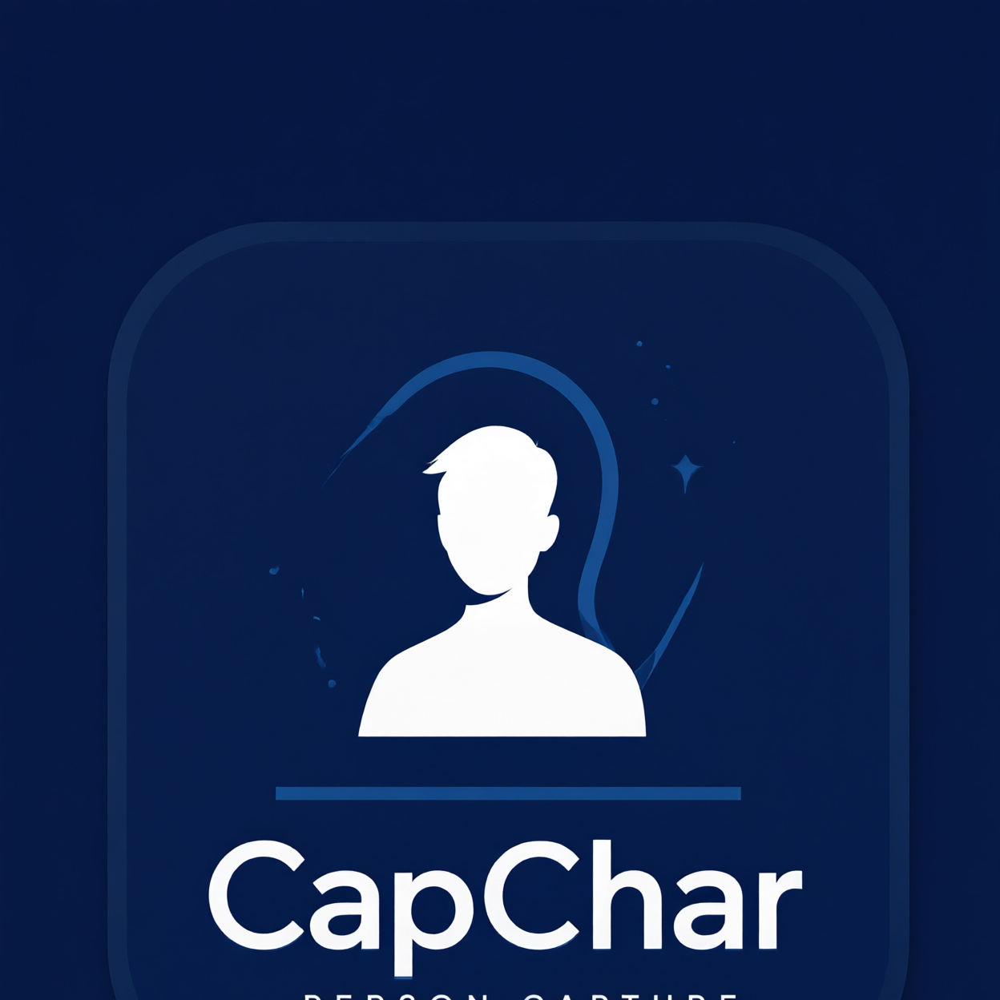
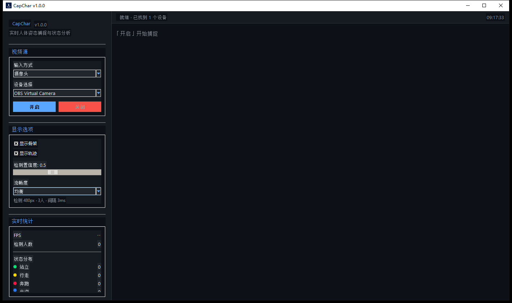

实时人体姿态捕捉与状态分析 · 让每一帧画面都读懂人的动作
免安装绿色版，解压后双击 CapChar.exe 即可使用。两个网盘任选其一。
CapChar 是一款运行在 Windows 上的实时姿态分析工具。它从摄像头或电脑屏幕中抓取画面，利用 MediaPipe 姿态估计模型定位人体 33 个骨骼关键点，实时绘制骨架、运动轨迹，并推断每个人的动作状态——站立、行走、奔跑、跳跃、倒地，一目了然。
既支持 USB / 虚拟摄像头真人捕捉，也能直接捕获屏幕画面，分析视频、直播或会议中的动作。
自动枚举 DirectShow 摄像头名称与显示器型号、分辨率、主屏标记，不再面对"摄像头 0"猜设备。
最多同时追踪 5 人，每人独立骨架、边界框与状态标签，互不干扰。
基于关键点几何规则实时推断 10 种动作状态，并按颜色即时区分显示。
从"极致画质"到"极致流畅"，动态权衡检测分辨率、人数与频率，适配不同性能的机器。
FPS、检测人数、各状态分布计数实时刷新，运行状况尽在掌握。
深色主题界面：左侧为视频源、显示选项与实时统计，右侧为主画面。

采集、检测、渲染三条流水线解耦：采集线程独立抓帧，检测线程异步推理，UI 只负责取最新结果绘制——任何一环变慢都不会拖垮界面。
flowchart LR A["摄像头 / 屏幕
OpenCV · mss"] --> B["采集线程
最新帧缓冲"] B --> C["UI 渲染循环
约 33 fps"] B --> D["异步检测线程
MediaPipe PoseLandmarker"] D --> E["状态分析
规则引擎"] E --> C C --> F["骨架 / 轨迹 / 统计"]
采集线程把可能阻塞的读帧移出 UI 线程；界面每 30 ms 只取最新一帧渲染，画面不掉帧、操作不卡顿。
上一帧未检测完就跳过新帧，永远处理最新画面；检测器跨启停复用，再次开启秒级完成。
设备扫描、模型初始化、资源释放全部在后台线程执行，启动、停止、切换设备时界面始终可响应。
Canvas 图像项复用而非逐帧重建，统计文本仅在变化时刷新，mediapipe 延迟加载缩短启动等待。
十种状态各有专属颜色，画面标签与统计面板同步着色。
五档预设覆盖从高精度到低配机器的全部场景，运行界面一键切换。
| 档位 | 检测宽度 | 最大人数 | 检测帧间隔 | 适用场景 |
|---|---|---|---|---|
| 极致画质 | 960 px | 5 | 1 | 高性能主机、精细分析 |
| 高画质 | 640 px | 4 | 1 | 主流配置、多人场景 |
| 均衡（默认） | 480 px | 3 | 3 | 日常使用的最佳平衡 |
| 流畅 | 320 px | 2 | 5 | 配置偏低的机器 |
| 极致流畅 | 240 px | 1 | 8 | 老旧设备、单人追踪 |
成熟开源组件组合，模型仅 5.7 MB，整机绿色版约 300 MB。
| 层次 | 技术 | 用途 |
|---|---|---|
| 姿态估计 | MediaPipe Tasks · PoseLandmarker (lite, float16) | 33 关键点骨骼检测，CPU 实时推理 |
| 画面采集 | OpenCV (DirectShow) · mss | 摄像头采集与高速屏幕捕获 |
| 界面 | Python · Tkinter / ttk | 深色主题桌面 UI，多线程异步架构 |
| 设备枚举 | Win32 注册表 · ctypes | 摄像头 FriendlyName 与显示器信息 |
| 分发 | PyInstaller (onedir) | 免安装绿色版，双击即用 |
绿色版开箱即用，源码与打包脚本完全开放。
# 方式一：绿色版（推荐） 解压 dist/CapChar → 双击 CapChar.exe → 选择设备 → 点击「开启」 # 方式二：源码运行 pip install -r requirements.txt python main.py # 方式三：自行打包 build.bat # PyInstaller 一键构建，产物在 dist/CapChar